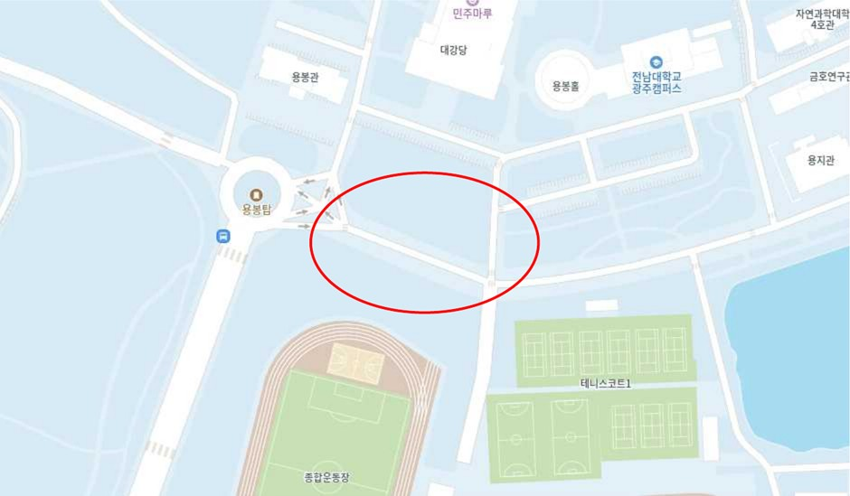

| 08:30 | 집결 — 전남대학교 대운동장 앞 (민주마루 건너편) |
|---|---|
| 09:00~13:30 | 이동: 전남대학교 → 경복궁식당 |
| 13:30~14:30 | 점심 식사 (안동찜닭) |
| 14:20 | 집결 |
| 14:30~15:00 | 이동: 경복궁식당 → 국립민속박물관 |
| 15:00~17:30 | 국립민속박물관 (해설 및 강연) · 1조~6조: 강연 → 해설 · 7조~12조: 해설 → 강연 |
| 17:20 | 집결 |
| 17:30~18:30 | 이동: 국립민속박물관 → 도봉숲속마을(숙소) |
| 18:30~ | 저녁 식사 (도봉숲속마을 구내식당) |
| 19:30~ | 개인 정비 및 휴식 |
| 07:50~08:50 | 아침 식사 후 출발 (도봉숲속마을 구내식당) |
|---|---|
| 08:50~10:00 | 이동: 도봉숲속마을(숙소) → 국립중앙박물관 |
| 10:00~12:30 | 국립중앙박물관 — 조별 및 자율 활동 |
| 12:20 | 집결 |
| 12:30~13:00 | 이동: 국립중앙박물관 → 월가갈비 서울시청본점 |
| 13:00~13:50 | 점심 식사 (소불고기전골) |
| 13:40 | 집결 |
| 13:50~14:00 | 이동: 월가갈비 서울시청본점 → 경복궁 |
| 14:00~17:30 | 경복궁, 국립고궁박물관 및 전공 테마별 자율답사 (코스 탭 참고) · 1권역: 서촌 일대 · 2권역: 창덕궁 및 종묘 일대 · 3권역: 한글가온길 및 조선어학회 터, 덕수궁 일대 |
| 17:20 | 집결 (경복궁 주차장) |
| 17:30~18:30 | 이동: 경복궁 → 봄이보리밥 노원점 |
| 18:30~19:30 | 저녁 식사 (봄이보리밥) |
| 19:20 | 집결 |
| 19:30~20:00 | 이동: 봄이보리밥 노원점 → 도봉숲속마을 |
| 20:00~22:00 | 현장 조사 및 디지털 스토리맵 구축 결과 공유 간담회 (송석대강당) |
| 22:00~ | 개인 정비 및 취침 |
| 08:00~09:50 | 아침 식사 (도봉숲속마을 구내식당) |
|---|---|
| 09:50 | 집결 후 출발 |
| 10:00~11:00 | 이동: 도봉숲속마을 → 남문통닭 |
| 11:00~12:00 | 점심 식사 (후라이드/갈비 반반) |
| 11:50 | 집결 |
| 12:00~12:10 | 이동: 남문통닭 → 화성행궁/수원화성 |
| 12:10~15:00 | 화성행궁 · 수원화성 — 조별 및 자율 활동 |
| 14:50 | 집결 (연무대 공영주차장) |
| 15:00~18:00 | 이동: 화성행궁/수원화성 → 전남대학교 |
| 18:00~ | 개별 귀가 |
호차별 탑승 시간·위치는 확정되는 대로 여기에 올라와요.
호차를 누르면 명단이 펼쳐져요. 굵은 이름이 조장이에요.
| 임장 | 이준환, 한정훈, 오제욱 |
|---|---|
| 차장 | 23 윤채원 |
| 1조 (8명) | 22 국성재, 22 박준서, 24 임무겸, 24 한제승, 26 권오준, 26 문찬흠, 26 임세민, 25 PHAM HUY DAN |
| 2조 (8명) | 22 장원준, 21 김민주, 23 윤채원, 26 김채련, 26 박준범, 26 배가윤, 26 황희경, 24 NGUYEN NGOC DAN VY |
| 3조 (8명) | 25 최정원, 25 강서연, 25 김지민, 25 조복진, 25 최연재, 25 한가현, 25 황영화, 25 HOANG NHAT MY |
| 4조 (7명) | 22 박지민, 21 문선주, 21 정지원, 26 박서연, 26 서혜원, 26 정지영, 26 조은경 |
| 임장 | 정민구, 김현정, 박예준, 박찬우 |
|---|---|
| 차장 | 24 김유민 |
| 5조 (8명) | 24 장희원, 24 김유민, 24 송정민, 24 심현채, 24 이경민, 24 이수영, 24 장윤서, 26 NGUYEN DIEU LINH |
| 6조 (8명) | 19 김태운, 21 김우현, 21 조장완, 23 김다빈, 23 최민영, 26 배세연, 26 이주혁, 25 NGUYEN THI DUYEN |
| 7조 (7명) | 24 고은재, 24 김하은, 24 정지인, 24 최가연, 25 박은혜, 25 서정, 24 YULDOSHEVA KHUMORA DILSHOD KIZI |
| 8조 (8명) | 20 김강현, 21 박정민, 24 여휘성, 25 박승빈, 26 박효민, 26 여선경, 26 이송아, 25 TRUONG THI THANH NGAN |
| 임장 | 최준, 백지민, 최진경, 김류인 |
|---|---|
| 차장 | 24 강다영 |
| 9조 (8명) | 24 강여은, 24 김서윤, 24 나영은, 24 장하은, 24 조원빈, 26 기나영, 26 조희영, 25 LE THI HUONG |
| 10조 (7명) | 24 박현비, 24 강다영, 24 임서연, 24 임유진, 25 장소윤, 26 강에스더, 26 임나연 |
| 11조 (8명) | 25 김나영, 22 박소희, 22 박현희, 22 신조은, 25 김규리, 25 오시은, 25 이아현, 22 TEN OKSANA VITALEVNA |
| 12조 (8명) | 24 차유빈, 20 정가은, 23 변수진, 24 김윤서, 24 나현서, 24 오세윤, 24 오윤정, 24 왕즈옌 |
· 8시 30분 민주마루 앞 집결 및 인원 체크
· 전남대학교 대운동장(민주마루 건너편)에서 버스 탑승 후 출발
버스 탑승 장소 (빨간 원)

아직 공지가 없습니다.
2일차 14:00~17:30 자율답사는 조별로 권역 하나를 골라 그 안에서 자유롭게 동선을 짭니다. 아래 장소들은 참고예요 — 권역 안이라면 어디를 가든 좋아요. 어디서든 [+ 자료 올리기]로 기록을 남겨 주세요. 종료 후 17:20 경복궁 주차장(사직로 161) 집결.
위 예시와 상관없이 우리 조가 가고 싶은 코스를 자유롭게 등록하면 지도에 주황색 경로로 표시돼요. 글로 쓰려면 장소 이름을 화살표(→)로 잇고(목록에 없는 장소도 OK), 더 쉽게는 [지도에서 코스 찍기]로 지도를 탭해서 만들 수 있어요. 다시 등록하면 최신 코스로 바뀝니다.
아직 등록된 코스가 없어요.
답사지를 누르면 해설·관련 작품·참고 링크가 펼쳐져요. 자료는 운영 시트의 '답사지자료' 탭에서 작성·수정하며(편집 권한자 누구나), 저장하면 몇 분 안에 여기에 반영됩니다.
2일차 자율답사 종료 후 17:20 경복궁 주차장(서울 종로구 사직로 161) 집결·승차. 호차별 탑승 시간·위치가 바뀌면 일정 탭의 '버스 탑승 안내'와 공지로 알려드려요. 늦을 것 같으면 반드시 미리 연락하세요.
· 15:30, 16:30 권역별 팀장을 통해 각 조장에게 위치 파악 연락 예정
· 해당 시간에 각 조장은 권역별 팀장 연락을 신속히 확인한 후 위치 보고
| 1권역 팀장 | 이동우 |
|---|---|
| 2권역 팀장 | 백주오 |
| 3권역 팀장 | 김지민 |
| 학과장 한정훈 | 010-2337-4810 |
|---|---|
| 조교 박찬우 | 010-3854-0848 |
| 학생회장 백주오 | 010-6284-2393 |
| 부학생회장 이동우 | 010-2977-7387 |
· 자율답사는 반드시 팀 단위로 함께 이동해요.
· 궁궐·박물관 관람 예절을 지키고, 차도·골목에서는 이동에 주의하세요.
· 위급 상황은 119/112에 먼저 신고한 뒤 인솔자에게 알려 주세요.